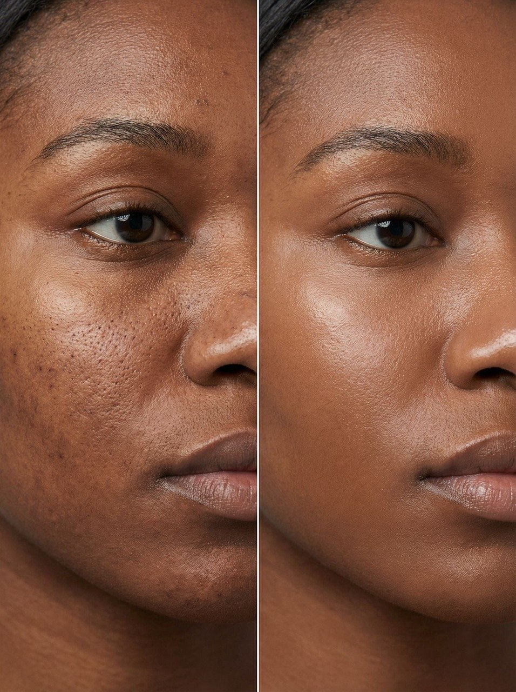

Експертний підхід
Сучасні техніки, професійний аналіз шкіри та уважний підбір процедур для видимого результату.
Skin Couture
Здорова шкіра — найкраща інвестиція в красу. Догляд, створений для вас, і результат, який ви побачите відразу.
Про нас
У Skin Couture NY кожна процедура підбирається індивідуально — з урахуванням стану шкіри, її потреб та бажаного результату. Ми створюємо преміальний досвід догляду, в якому поєднуються експертний підхід, делікатна турбота та естетика сучасної косметології.
Сучасні техніки, професійний аналіз шкіри та уважний підбір процедур для видимого результату.
Жодних шаблонних рішень — лише персоналізований протокол догляду під твій тип шкіри, стан і запит.
Спокійна атмосфера, естетика простору та сервіс, який робить процедуру не лише ефективною, а й по-справжньому приємною.
Процедури
Featured treatment
Що таке Glow Facial?
Glow Facial — це процедура, спрямована на досягнення сяючої, гладкої та здорової шкіри. Вона поєднує глибоке очищення, делікатне відлущення та зволоження.
Ідеально підходить перед особливими подіями або коли шкірі потрібне швидке оновлення.
Усі процедури персоналізовані відповідно до потреб вашої шкіри. Консультація включена.
Результат

Ми працюємо з якістю шкіри, її текстурою, тоном і природним сяйвом, щоб результат виглядав естетично, делікатно та по-справжньому доглянуто.
Шкіра виглядає більш гладкою, м’якою та візуально доглянутою.
Менше тьмяності, більше природного сяйва та відчуття здорової шкіри.
Делікатні, але помітні зміни, які підсилюють природну красу без перевантаження образу.
Відгуки
Контакти
Оберіть зручний спосіб зв’язку, і ми допоможемо підібрати процедуру відповідно до потреб вашої шкіри.